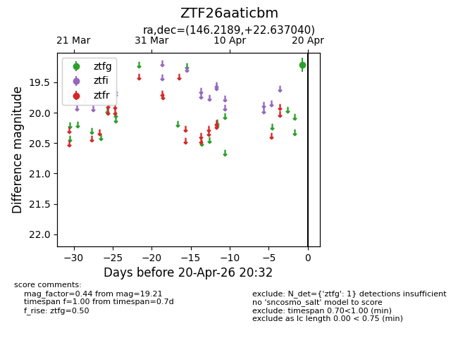
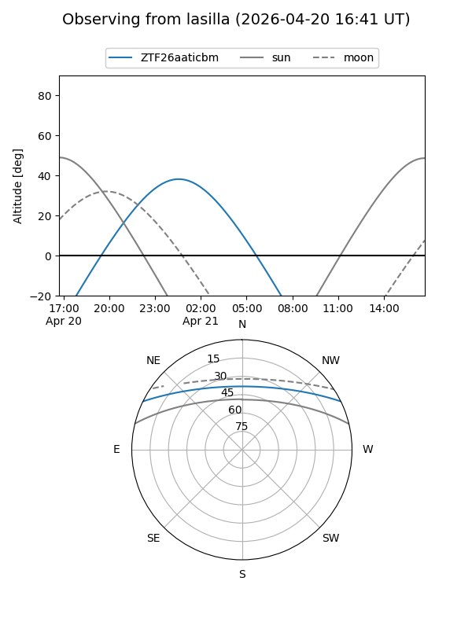
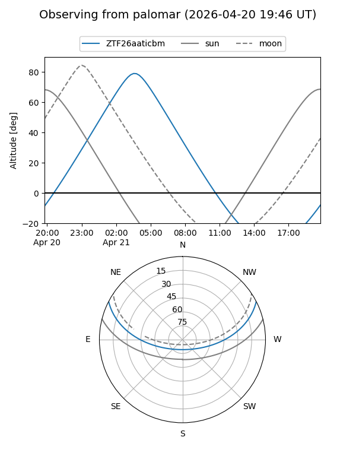

ZTF26aaticbm
Target ZTF26aaticbm at 2026-04-20 20:42
Aliases and brokers:
FINK: link
Lasair: link
ALeRCE: link
alt names
ZTF26aaticbm (ztf,fink_ztf)
Coordinates:
equatorial (ra, dec) = 146.2189,+22.63704
equatorial (HMS+DMS) = 09:44:52.53,+22:38:13.34
galactic (l, b) = (208.3650,+47.68649)
Flags:
Photometry:
last ztfg=19.21
1 ztfg detections
Lightcurve

Visibility


Additional plots